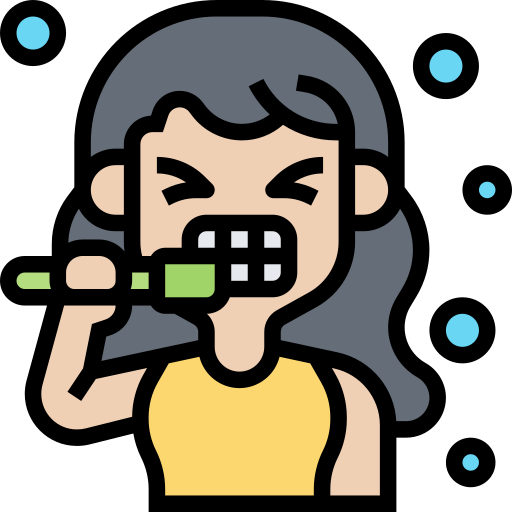

PACIENTES
{{ pac.nombre }} - {{ pac.apellido }}
ESPECIALISTAS
{{ esp.nombre }} - {{ esp.apellido }}
ESPECIALIDADES



SELECCIÓN DE TURNO
{{ activeEspecialista.nombre }} - {{ activeEspecialista.apellido }}
{{ speciality.nombre }}
No hay turnos disponibles
No hay turnos disponibles